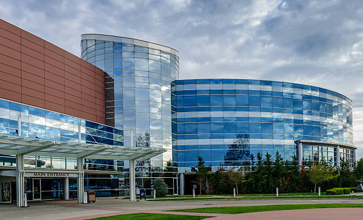
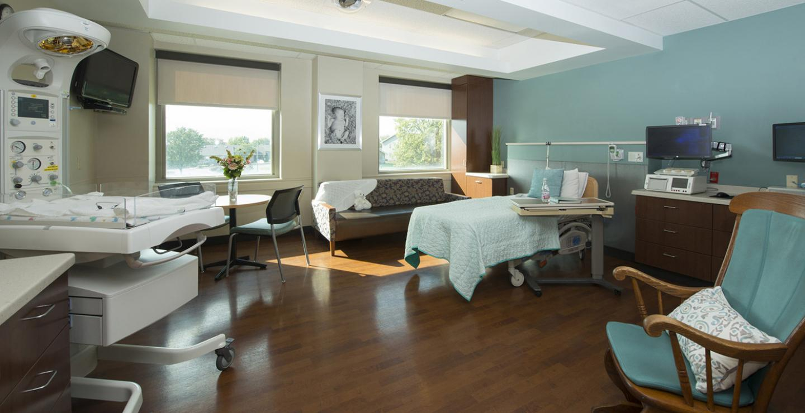

Main Hospital
Location: 123 Healthway, City, State, ZIP
The Main Campus of Vital Care Hospital is our flagship facility, offering a wide range of specialized medical services and state-of-the-art equipment. This branch is equipped with advanced diagnostic tools, cutting-edge treatment technologies, and a dedicated team of healthcare professionals. It serves as the central hub for emergency care, major surgeries, and comprehensive patient management.
Northside Clinic
Location: 456 Wellness Ave, City, State, ZIP

Northside Clinic provides essential outpatient services and routine medical care to the northern suburbs. With a focus on preventative care and chronic disease management, this branch is designed for patient convenience and accessibility. Services include general consultations, minor procedures, and wellness programs.
Southside Maternity Center
Location: 789 Family Blvd, City, State, ZIP
The Southside Maternity Center specializes in prenatal, delivery, and postnatal care. Our dedicated maternity staff ensures a safe and comfortable experience for mothers and newborns. The center is equipped with modern delivery suites, neonatal care units, and support services for new families.
Summary Table of Hospital Details
| Branch | Specialties | Contact Number |
|---|---|---|
| Emergency Services | Urgent Care, Trauma | (123) 456-7890 |
| Cardiology | Heart Disease, Preventive Care | (123) 456-7891 |
| Pediatrics | Child Health, Immunizations | (123) 456-7892 |
| Orthopedics | Joint Replacement, Sports Injuries | (123) 456-7893 |
| Oncology | Chemotherapy, Radiation Therapy | (123) 456-7894 |
| For more information about our services or to schedule an appointment, please contact us at (123) 456-7895 or visit our website. | ||